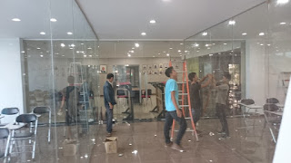
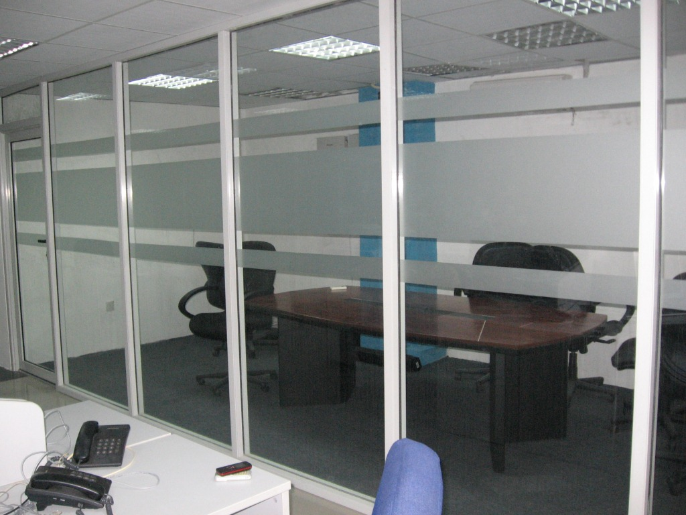

Kian berkembangnya dunia pembangunan, maka hadir banyak material penambah yang melengkapi estetika sebuah banguanan. Kaca semakin melengkapi bangunan agar menonjol lebih menawan dan mempunyai poin keindahan jikalau di pandang orang.
Ragam-tipe kaca diantara lain kaca tempered, kaca shower, railing kaca, kanopi kaca dan masih banyak lagi. Tak hanya material kaca kini juga terdapat material kayu atau parket lantai kayu jati.
Distributor & Supplier Pintu Lipat Kaca Surakarta
Saat ini, alternatif ragam kaca bermacam dan bervariasi. Pada kenyataannya, harga kaca tempered ini tak terlalu mahal. Mak dari itu, kaca ini ditawarkan dengan harga yang cukup dan relatif murah. Jenis kaca nomor 6 ini sungguh-sungguh disarankan untuk diciptakan sebagai bahan membuat pintu lipat kaca.
Harga pintu kaca lipat Surakarta frameless ini amat diberi pengaruh oleh ukuran lebar dan tingginya pintu. Banyak pertimbangan yang membuat Anda pasti yakin untuk memilih kaca tempered ketimbang tipe kaca yang lainnya. Hinges adalah aksesoris vital, karena aksesoris inilah yang berperan untuk menyangga berat pintu kaca lipat Surakarta.
Distributor & Supplier Kaca Shower

Pintu Kaca Shower pada kamar mandi yaitu salah satu pilihan yang baik untuk desain interior kamar mandi modern. Penyekat ini akan memisahkan antara tempat berair yang diaplikasikan untuk mandi atau meletakan shower dan tempat lain yang yaitu area kering. Kaca shower ini dapat menjadi dan mempunyai nilai estetika tersendiri sebab dengan memasangnya tentu kamar mandi anda akan terlihat lebih cantik dan mewah layknya kamar mani hotel. Tidak hanya indah tapi kaca shower bisa menjadi kaca pembatas antara lantai kering dan basah pada kamar mandi. Ada beberapa alasan kenapa Pintu Kaca Shower banyak diaplikasikan salah satunya yakni kaca lebih kelihatan bersih dan rapi dan juga lebih mudah dalam perawatannya. Kelebihan shower screen dibanding dengan cara penyekatan yang lain adalah dihasilkan dalam bentuk yang sudah jadi dan tinggal dipasang saja.
Tidak anda sedang memerlukan kaca shower, hal yang perlu anda lakukan adalah mengunjungi dis.or.id. Disana anda bisa mendapatkan kaca shower yang pastinya sesuai untuk kamar mandi anda. Tidak terbaik dan harga terjangkau. Anda dapat buktikan sendiri.
Distributor, Supplier & Jasa Pasang Kanopi Kaca

Anda dapat memilih kanopi kaca yang layak dengan kebutuhan dan harapan anda. Canopy kaca dengan atap kaca memang sebuah bangunan yang asangat elgan untuk jaman modern seperti kini ini dengan harga yang betul-betul lumayan bila di bandingkan kanopi atap awam. Harga atap kaca per meter persegi juga benar-benar dipengaruhi oleh struktur pensupport yang di gunakan. Ada beberapa alasan mengapa Pintu Kaca Shower banyak digunakan salah satunya yaitu kaca lebih menonjol bersih dan rapi dan juga lebih gampang dalam perawatannya. Sekiranya tembus pandang, kaca meresap sinar yang masuk sehingga kian tebal kaca maka semakin sedikit cahaya yang dapat melewatinya, maka sifat transparannya makin berkurang.|Di samping pintu kaca shower akan membikin kamar mandi kecil tampak lebih besar.
Tak anda beratensi untuk memasang kaca kanopi pada rumah, gedung ataupun kantor, anda dapat langsung mengunjungi dis.or.id. Ini nampak dari bahan material yang di gunakan dalam pembuatan kanopi kaca. Anda juga dapat memenfaatkan jasa pemasangan atap kanopi kaca dengan seluruh jenis kaca yang anda butuhkan yang layak dengan kriteria atap kanopi. Bila fungsi utama kanopi sebagai pelindung untuk bangunan hal yang demikian, pemasangan kanopi kaca juga bisa membuat bangunan menjadi terlihat lebih menawan dan menarik, apalagi mengaplikasikan konsep yang sama dengan konsep rumah minimalis. Disana anda akan mendapatkan kanopi kaca yang layak dengan bermacam-macam ketebalan dan harga yang cukup terjangkau.
Jasa Maintenance Kaca
Jasa maintenance kaca menjadi solusi bagi Anda yang memiliki gedung yang terbuat dari kaca. Lazimnya ditahui banyak pemilik gedung kaca yang ingin merawat bangunan. Berjenis-jenis, kaca akan kelihatan kusam karena telah lama tidak dibersihkan. Dis.or.id memiliki tenaga ahli yang bisa cakap membersihkan gedung pencakar langit yang bangunannya terbuat dari kaca. Jika itu, mampu membersihkan bangunan kaca melengkung.
Dis.or.id yakni perusahaan jasa di bidang maintenance kaca gedung dengan memberikan sebagian pelayanan. Salah satunya pelayanan berupa pembersihan kaca dengan memakai alat pembersih yang bisa membikin kaca gedung Anda tampak bersih seperti sediakala. Tersedia alat penunjang agar seluruh sisi gedung yang terbuat dari kaca dapat dipastikan seluruh sisi gedung dapat di bersihkan. Disana anda dapat memanfaatkan jasa maintenance kaca dengan tenaga ahli yang cakap membersihkan gedung kaca dengan produk pembersih kaca apa yang terbaik untuk menghilangkan kotoran dan kusam. Jika ahli juga betul-betul memastikan. Oleh sebab itu, dis.or.id cuma memilih orang-orang yang betul-betul profesional dan sudah mempunyai pengalaman dalam hal maintenance kaca.
Jasa Pemasangan Kaca Tempered

Sekarang jasa pemasangan kaca tempered menjadi opsi yang ideal dikala Anda berharap memiliki sebuah hunian atau gedung perkantoran yang komponen tertentu terbuat dari kaca tempered. Disana anda dapat memanfaatkan jasa maintenance kaca dengan kekuatan pakar yang cakap membersihkan gedung kaca dengan produk pembersih kaca apa yang terbaik untuk menghilangkan kotoran dan kusam. Melainkan dahulu hanya gedung perkantoran atau pusat perbelanjaan modern saja yang memakai jenis kaca ini, sekarang rumah hunian juga sudah dibangun dengan kaca tempered.
Kalau itu, pelbagai komponen properti akan kian menarik seandainya diwujudkan dari kaca tempered seperti kanopi, pintu, kamar mandi, dan balkon.
Untuk itu, dis.or.id hadir sebagai penyedia jasa pemasangan kaca tempered yang telah berpengalaman. Disana anda dapat memanfaatkan jasa pemasangan kaca tempered untuk segala variasi bidang maupun bangunan. Tidak ketika ini anda sedang berharap membangun suatu bangunan atau gedung, anda dapat memanfaatkan kaca tempered untuk diaplikasikan langsung ke semua tipe bidang. Lebih dari itu, dis.or.id sudah menyiapkan daya pakar yang siap untuk melaksanakan pemasangan, entah itu kaca tempered untuk kanopi, pintu, partisi, balkon, dan lain sebagainya. Harga yang ditawarkan untuk pemasangan kaca tempered betul-betul murah.
Distributor & Supplier Pintu Kaca

Pintu kaca sungguh-sungguh berguna bagi anda yang ingin menabah kesan gedung lebih menawan dan mewah. Tak cuma di gedung atau perkantoran, tetapi pntu kaca juga bisa anda aplikasikan pada rumah supaya cahaya dapat langsung masuk pada ruangan dan memberikan suasana hangat. Ada juga pintu kaca dengan pigura dengan desain yang berbeda seperti folding dan sliding. Kini hal yang demikian dapat terbuat dari kayu atau aluminum. Anda bisa pilih bahan untuk bingkai yang Anda inginkan, apakah itu diwujudkan dari aluminum atau dari kayu. Dalam hal ini, terdapat sebagian variasi kaca dengan mutu yang terbaik. Kini paling banyak diminati dikala ini merupakan kaca tempered karena jauh lebih kuat dan tahan lama.
Dengan kekuatan pakar yang sudah sangat handal dalam membikin berjenis-jenis model pintu kaca.
Jual Kaca Cermin

Kaca cermin kini mempunyai desain yang berbeda. Kaca cermin juga diciptakan untuk yang lain seperti pintu. Banyak desain menarik dari cermin yang dapat Anda pilih di sini. Untuk bangunan bertingakat, khususnya diaplikasikan pada jenis dinding kaca. Salah satunya, kaca cermin ini bersifat refletif. Pun, ada juga desain kaca cermin yang unik. Pun juga bagian tepi. Sementara itu, saat diamati dari luar, kaca ini reflektif. Artinya, Anda tidak bisa memperhatikan yang ada di dalam ruangan. Apabila itu, sesekali cerminnya tidak ada bingkainya atau yang acap kali disebut dengan kaca cermin frameless.
Sekarang, ada cermin framless. Ada yang terbuat dari plastik, kayu, dan aluminum. Dengan jenis kaca ini, orang yang berada di luar ruangan tidak bisa memperhatikan apa yang ada di dalam ruangan. Tak contoh lemari pakaian di mana komponen pintunya terbuat dari kaca cermin. Tersedia kaca cermin dengan beragam ukuran yang bisa anda pesan di dis.or.id. Harga yang relatif murah dan kualitas terbaik yakni ciri khas dari dis.or.id. Tetapi kunjungi dan dapatkan kabar menarik mengenai kaca cermin asa anda.
Jasa Pemasangan Railing Kaca

Kini railing kaca sekarang kian populer. Tak konsep rumah modern dikala ini, kebanyakan rumah dibangun dengan desain minimalis. Kecuali ini disebabkan kian banyak permintaan terhadap railing ini. Pemilik rumah mau sekali mempunyai interior yang demikian itu minimalis. Tapi, Anda semestinya pastikan railing kaca bermutu terbaik. Sebaiknya pakai kaca tempered sebab variasi kaca ini benar-benar kuat. Kalau itu, dari segi keamanan, kaca tempered ini juga tepat jikalau menjadi opsi Anda. Namun kaca pecah, kaca tempered tak akan melukai orang yang terkena kaca tempered hal yang demikian lantaran pecahan semacam itu kecil dan lembut, tidak berupa kepingan yang runcing.
Anda dapat memilih kaca dengan kualitas terbaik. Tentukan juga desain railing kaca. Ada kaca tempered yang kini diminati banyak orang. Kaca ini betul-betul kuat dan juga aman. Aluminum lazimnya yang dipakai sebagai railing atau bingkai. Jikalau memberikan kesan minimalis pada interior rumah, ini juga membikin rumah Anda tampak lebih nyaman untuk dijadikan daerah tinggal.
Dengan harga yang benar-benar terjangkau, anda bisa langsung menerima railing kaca yanag anda inginkan.
Jasa Pemasangan Kubikel Toilet

Bila anda mengininkan WC yang layaknya mall maupun hotel, ada pantasnya anda menerapkan kubikel kamar kecil. Tapi, seiiring berkembangnya desain interior, kamar mandi pun bisa di sekat dengan penyekat dari kaca.
Bila anda berminta untuk membeli kubikel kaca, anda bisa mengunjungi dis.or.id. Kubikel kamar mandi atau kubikel kamar mandi ini lebih murah di banding dengan pembuatan kamar mandi atau kamar mandi konvensional. Sebab disana terdapat kubikel toilet dengan bermacam ukuran serta ketebalan kaca.
Tersedia beragam ukuran serta ketebalan dari kubikel yang bisa anda pilih cocok dengan yang anda inginkan.
Sebab disana terdapat beraneka ukuran kubikel WC yang dapat anda jadikan alternatif untuk hunian atau temap usaha anda.
Distributor & Supplier Partisi Kaca

Partisi ini sekarang lagi diaplikasikan di perkantoran, hotel, atau pusat perbelanjaan saja. Banyak rumah hunian yang sekatnya sekarang terbuat dari kaca. Tarif ini disebabkan banyak keunggulan dari partisi modern ini. Karena memang biaya pembuatan partisi ini jauh lebih murah. Alasan yang kedua, partisi kaca ini membikin ruangan kelihatan benar-benar minimalis. Ini sesuai dengan konsep atau desain properti ketika ini. Tak cuma rumah, sekarang perkantoran juga dijadikan sedemikian rupa supaya menonjol sungguh-sungguh minimalis dan menarik. Lain kalau Anda memilih memakai partisi kaca. Bahan ini lebih murah dan dalam pemasangan. Anda bisa mencontoh mereka. Selain, Anda sepatutnya tahu ada desain yang berbeda. Ada partisi kaca frameless atau tanpa dan partisi dengan bingkai. Selain itu, tentukan juga variasi kaca yang mau apakah transparan, semi transparan, atau kaca cermin yang membuat ruangan benar-benar privat. itu, teladan partisi kaca ada yang frameless (tanpa ) dan juga ada yang menerapkan pigura. Partisi kaca dengan terbaik dan bisa anda temukan di dis.or.id. Disana anda bisa menerima partisi kaca dengan harga yang betul-betul terjangkau.